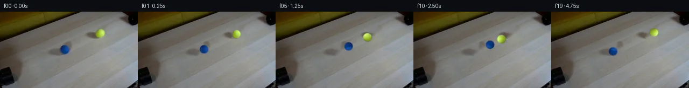

![首帧]()

Round 00
2026-11-04T20:58:14.090478+00:00像素候选变化代码 +152/−0inspection 更新
pixels 42f2a03af9ae2c1d · code 72d0f4983a6e1ed6
查看本轮 generate.py 真实 diff
--- previous/generate.py +++ current/generate.py @@ -0,0 +1,152 @@ +#!/usr/bin/env python3 +"""Generate the 20-frame equal-speed ball collision sequence. + +All image synthesis is local. The source frame supplies the locked background +and ball appearance; OpenCV inpainting is confined to the two initial ball +footprints. Later frames are never loaded into an image viewer. +""" + +from pathlib import Path + +import cv2 +import numpy as np +from PIL import Image, ImageDraw + +from artifact_io import save + + +ROOT = Path(__file__).resolve().parent +W, H = 256, 144 +BLUE0 = np.array([120.0, 72.0], np.float32) +YELLOW0 = np.array([185.0, 41.0], np.float32) +BALL_RADIUS = 8.75 + + +def smoothstep(edge0, edge1, x): + t = np.clip((x - edge0) / (edge1 - edge0), 0.0, 1.0) + return t * t * (3.0 - 2.0 * t) + + +def make_background(source): + """Remove only both balls/shadows while retaining the locked apparatus.""" + mask = np.zeros((H, W), np.uint8) + # A 13 px disk includes each 9 px ball and its compact contact shadow. + for center in (BLUE0, YELLOW0): + cv2.circle(mask, tuple(np.rint(center).astype(int)), 13, 255, -1, cv2.LINE_AA) + # Telea is used only inside the marked disks. Grain outside is bit exact. + return cv2.inpaint(source, mask, 4.0, cv2.INPAINT_TELEA) + + +def extract_sprite(source, center, radius=BALL_RADIUS): + """Extract a source-derived circular ball sprite with antialiased coverage.""" + half = 11 + cx, cy = np.rint(center).astype(int) + rgb = source[cy-half:cy+half+1, cx-half:cx+half+1].astype(np.float32) + yy, xx = np.mgrid[-half:half+1, -half:half+1].astype(np.float32) + rr = np.sqrt(xx * xx + yy * yy) + # Interior source pixels remain intact; only the last 1.4 px are feathered. + alpha = 1.0 - smoothstep(radius - 1.35, radius + 0.15, rr) + return rgb, alpha.astype(np.float32) + + +def shift_sprite(sprite, angle_deg): + """Apply a subtle roll rotation around the sprite center.""" + rgb, alpha = sprite + h, w = alpha.shape + m = cv2.getRotationMatrix2D(((w - 1) / 2, (h - 1) / 2), angle_deg, 1.0) + out_rgb = cv2.warpAffine(rgb, m, (w, h), flags=cv2.INTER_CUBIC, + borderMode=cv2.BORDER_REFLECT_101) + out_a = cv2.warpAffine(alpha, m, (w, h), flags=cv2.INTER_CUBIC, + borderMode=cv2.BORDER_CONSTANT, borderValue=0) + return out_rgb, np.clip(out_a, 0.0, 1.0) + + +def add_shadow(canvas, center): + """Add a compact fixed-light soft contact shadow behind a ball.""" + yy, xx = np.mgrid[0:H, 0:W].astype(np.float32) + # Light comes from upper-left, so the contact shadow falls down-right. + sx, sy = center[0] + 2.2, center[1] + 3.1 + q = ((xx - sx) / 8.2) ** 2 + ((yy - sy) / 4.8) ** 2 + opacity = 0.17 * np.exp(-2.0 * q) + canvas *= (1.0 - opacity[..., None]) + + +def composite(canvas, sprite, center): + rgb, alpha = sprite + sh, sw = alpha.shape + # Subpixel placement by warping a small sprite into full-frame coordinates. + halfx, halfy = (sw - 1) / 2, (sh - 1) / 2 + m = np.array([[1.0, 0.0, center[0] - halfx], + [0.0, 1.0, center[1] - halfy]], np.float32) + fg = cv2.warpAffine(rgb, m, (W, H), flags=cv2.INTER_CUBIC, + borderMode=cv2.BORDER_CONSTANT, borderValue=0) + a = cv2.warpAffine(alpha, m, (W, H), flags=cv2.INTER_CUBIC, + borderMode=cv2.BORDER_CONSTANT, borderValue=0) + a = np.clip(a, 0.0, 1.0)[..., None] + canvas[:] = fg * a + canvas * (1.0 - a) + … diff truncated; 65 more lines …